A credit book for a small Indian grocery shop, taken from a laptop to a monitored, auto-scaling Kubernetes cluster.
Milap Kothari · github.com/milap1afk/devops-homework
Neighbours take groceries on credit and pay back later. Today that lives in a paper notebook.
Balance goes up
Balance goes down
Counted in today's takings
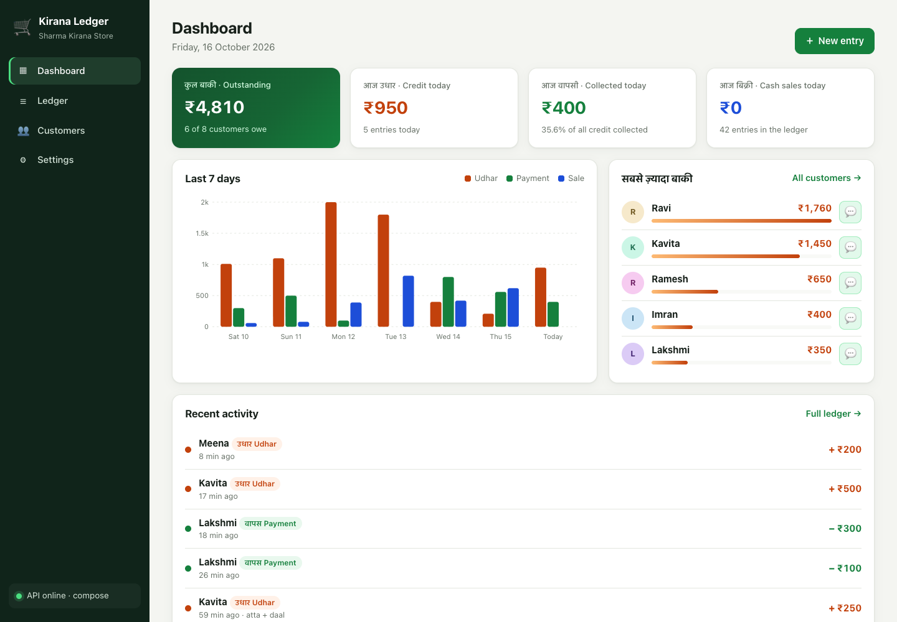
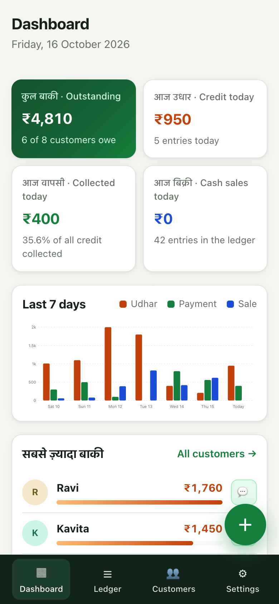
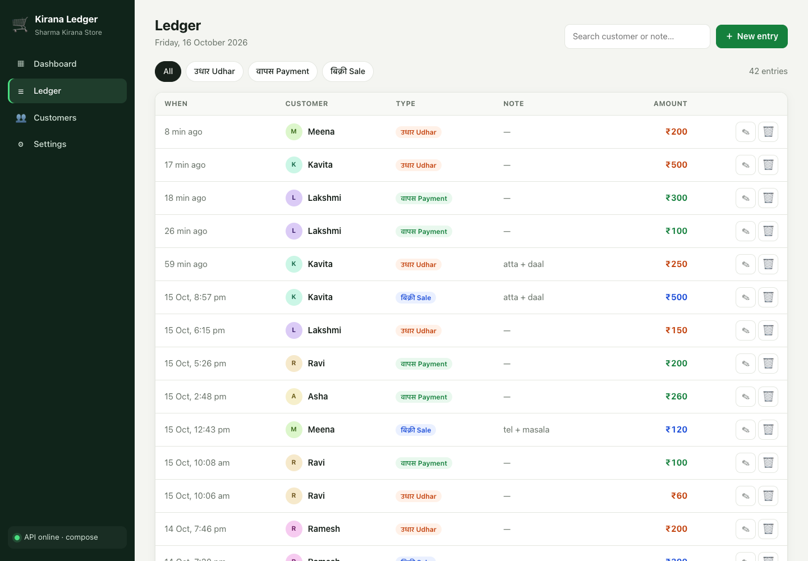
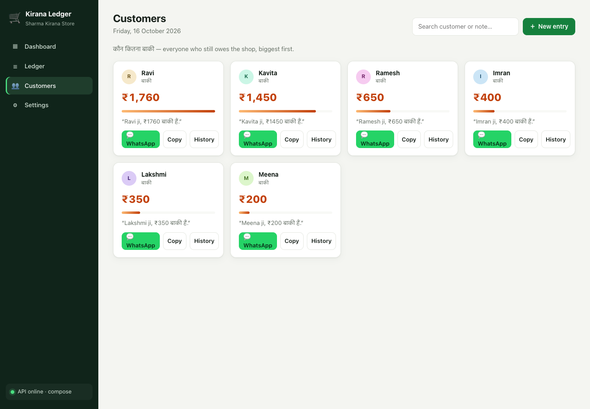
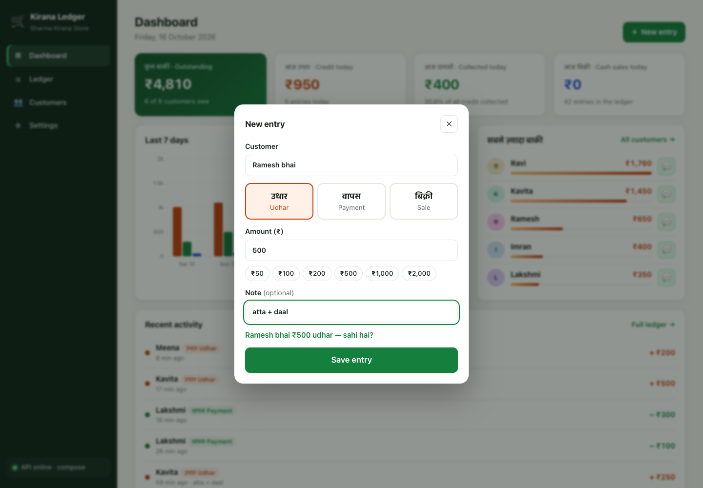
| Method | Path | Purpose |
|---|---|---|
| GET | /health | liveness — never touches the DB |
| GET | /ready | readiness — SELECT 1, else 503 |
| GET | /metrics | Prometheus + kirana_ledger_entries_total |
| GET | /api/stats | KPIs + 7-day trend (IST) |
| GET | /api/entries | ?type= ?q= ?customer= ?limit= |
| POST · PUT · DELETE | /api/entries/{id} | writes need X-API-Key |
| GET | /api/customers[/{name}] | balances + reminder text |
/docs0001, with CHECK constraints (amount > 0, valid type)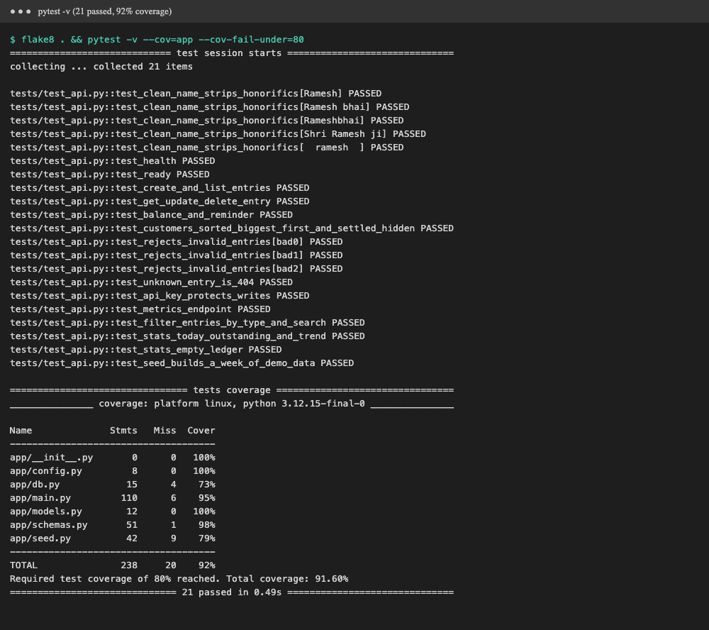
dependency_overrides — never productionflake8 + pytest fail → no image is built2 stages: deps → python:3.12-slim · apt-get upgrade · USER 10001 · no DB needed to boot
2 stages: node:22-alpine builds dist/ → nginx-unprivileged on 8080 · USER 101 · Node never ships
postgres healthy → migrate exits 0 → backend healthy → frontend on :3000
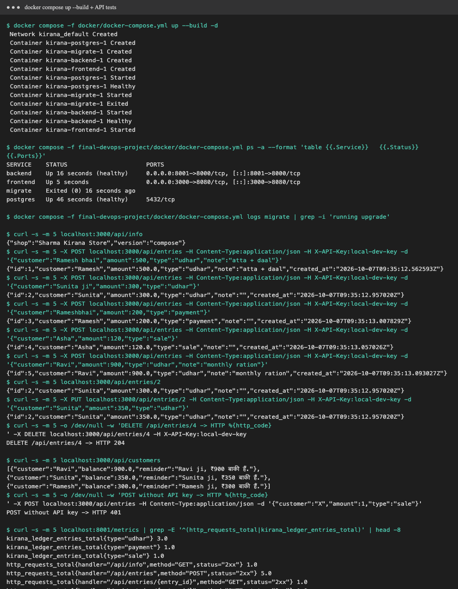
:<sha>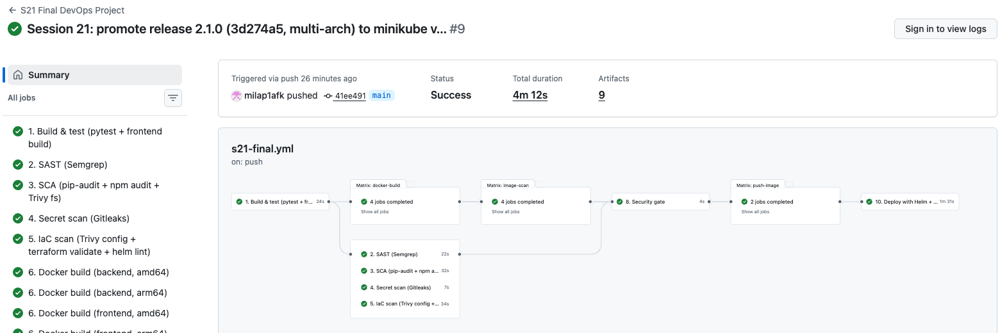
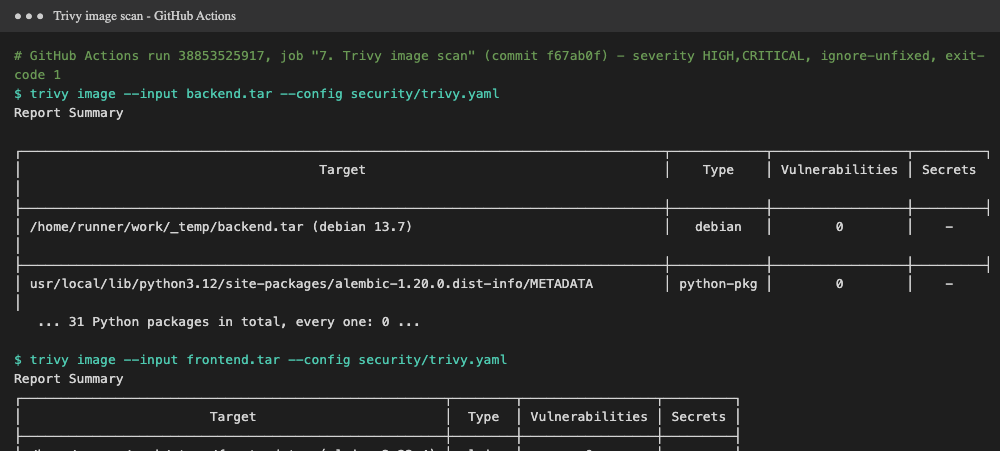
| Layer | Tool |
|---|---|
| SAST | Semgrep (python, fastapi, js, nginx, docker, secrets) |
| Dependencies | pip-audit · npm audit · Trivy fs |
| Secrets | Gitleaks over full git history |
| IaC | Trivy config · terraform validate · helm lint |
| Images | Trivy, fixable HIGH/CRITICAL → fail |
Result: 0 fixable HIGH/CRITICAL in all four images (Debian 13.7 + 31 Python packages; Alpine 3.23.4). "Clean" means nothing known and fixable today — so it runs on every push.
t3.medium 2–4, EBS CSI add-on, IAM rolesfmt -check · validate · Trivy config scan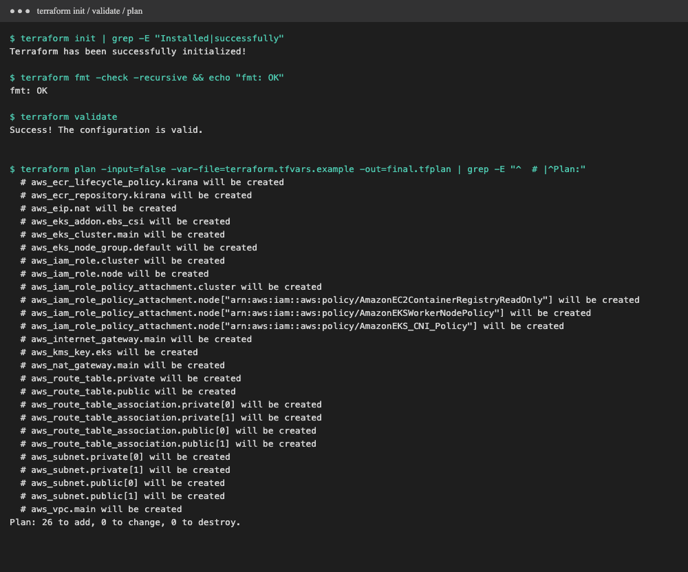
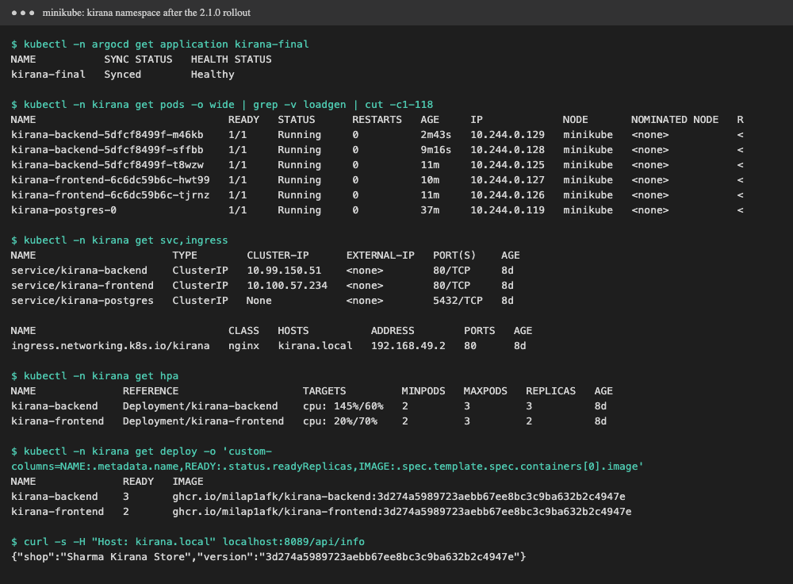
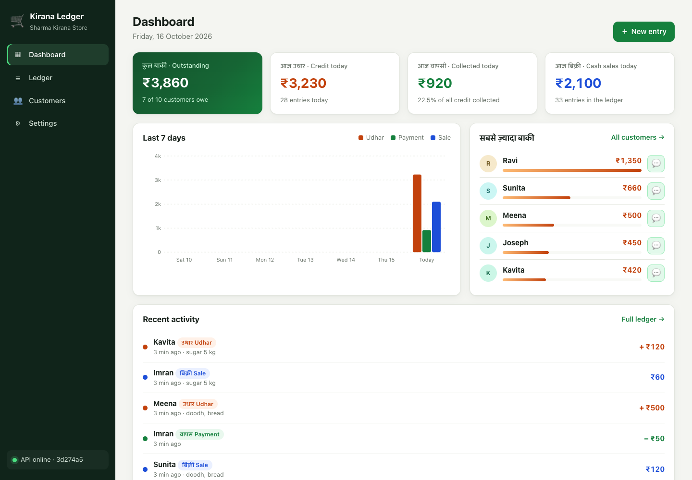
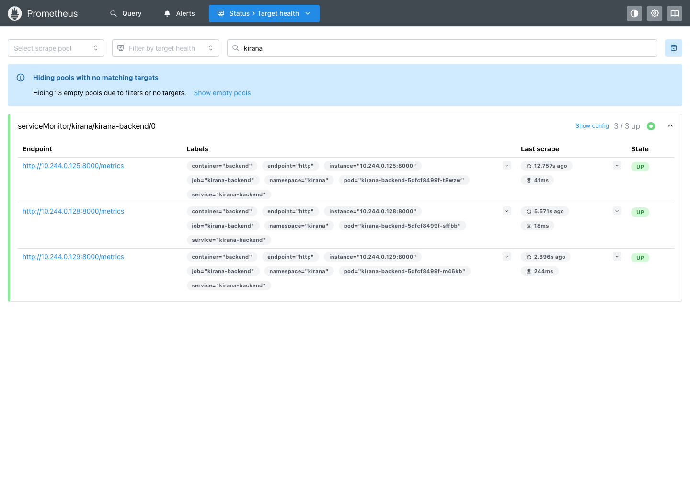
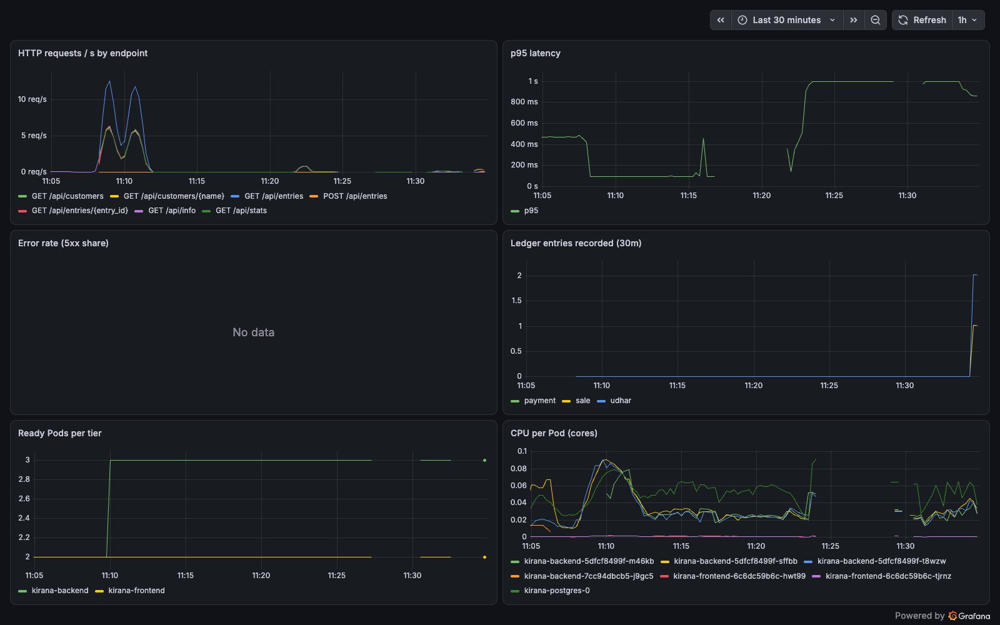
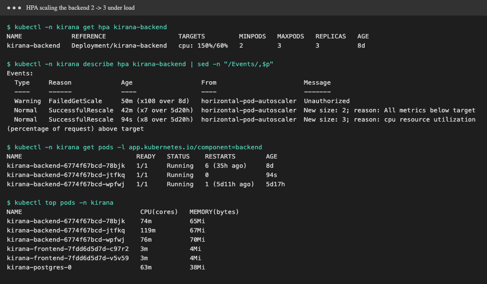
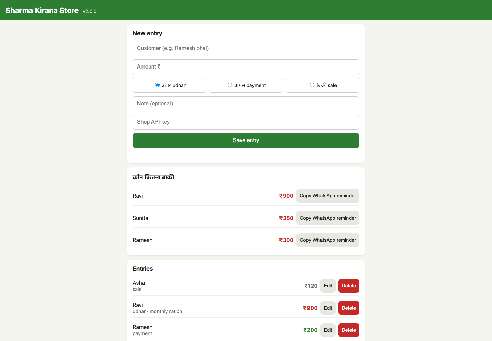
8 GB node at 419 % CPU; pg_isready with a 1 s liveness timeout timed out → kubelet kept killing a healthy database → every API Pod 0/1.
Fix: patient DB liveness (30 s delay, 5 s timeout, 6 failures), configurable probe timeouts, API boots without DB, HPA max 3.
Lesson: liveness restarts; readiness only removes from the Service.
GitOps rollout to the Apple Silicon node crash-looped: images were linux/amd64, node is arm64.
Fix: build each tier on native amd64 + arm64 runners, scan all 4, publish one multi-arch tag per SHA.
Lesson: the rolling update protected users — new Pods never got Ready, old ones kept serving.
Questions? · session-21-final-devops-project/